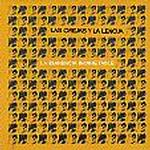

| Artist: | Los Orejas Y La Lengua |
| Title: | La Eminencia Inobjetable |
| Label: | Viajero Inmovil Records |
| Length(s): | 45 minutes |
| Year(s) of release: | 2002 |
| Month of review: | [09/2002] |
| 1) | Asi Suenan Tus Ojos | 3.45 |
| 2) | Las Mil Y Una Formas De Acabar Con La Tragedia De Occidente | 3.57 |
| 3) | Guaresimia | 4.32 |
| 4) | Fugaz En La Ciudad Antigua | 3.11 |
| 5) | $5000 De F.Kropfl | 1.38 |
| 6) | Saltar Y Brincar | 2.10 |
| 7) | Telelito | 2.56 |
| 8) | Anzuelo Para Fennanno | 0.46 |
| 9) | Ignacio | 4.15 |
| 10) | Gastando Las Avacaciones Limpiando Casas | 4.57 |
| 11) | Tratado | 4.41 |
| 12) | Irremediable Muerte Del Sr. Sandoval Y Su Cgica La Sodomita | 6.15 |
| 13) | Igual Qua Ayer O Peor (bonus Track) | 1.36 |
Las Mil.. (no, I'm not gonna type that full title again) starts an instrumental experiment, to become a vocal one ending up a hodgepodge of experimentalism. Nice enough, though.
Guaresimia is a more mellow track than the two before, being even more or less melodic, and far less experimental: flute and, admittedly, odd sounding guitar riffs make up most of this track.
Fugaz is a string track over a thunderstorm, slowly giving way to keys and flute and later trumpet. Another track which favours melody over experiment.
$5000 De F.Kropfl is more of an experiment, based on the rhythmic sound of, what sounds like, a squeaking swing. The addition of instruments however, makes it almost into a non vocal lullaby.
Saltar Y Brincar combines experiment with melody, bringing on a track that would fit nicely with 5uu's or Present material. Good stuff.
Telelito is based on the interchange of flute and piano. At first rather melodic, but experimental later, and even jazzrock like with the onset of guitarrismos.
Anzuelo Para Fennanno is crickets with spacey sounding bleeps. Rather soothing, if taken in small doses (which this is).
Ignacio starts with jumping beans, or sounds that remind me of those, with some trumpet and rhythm. After a slow fade out we move into a rather experimental bit (of course, before now it's all been very tranquil) to close the track with the beans.
Gastando... contains the sound of people shouting, on some guitar melody that's almost Holdsworth. As the track progresses it becomes rather minimal.
Tratado starts rather slowly and atmospherically, to pick up a bit as it progresses. It does remain, however, a rather melodic piece.
Irremediable... alternates rather bouncy up tempo experiments with mid tempo melody. Of course, these two parties can't stay apart during the course of the track, making it into mid up tempo melodic experimenting. And thingees, of course. Rather enjoyable, anyway.
Closer Igual Que Ayer O Peor combines neuroticness with a melodic base, summing this album up pretty well. As compared to what this track is a bonus, remains unclear (to me, for one thing).